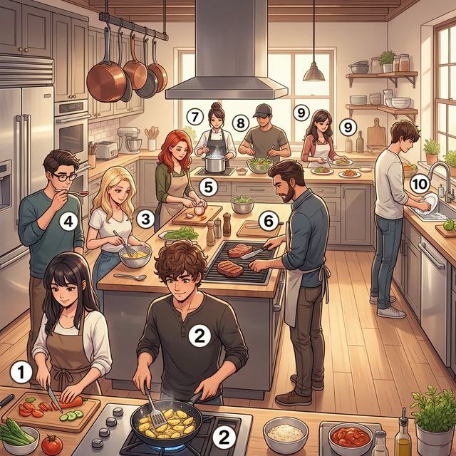
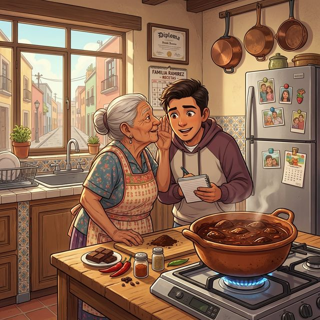

Cervantes: §5 Alimentación: 심화된 식재료 표현, 요리법 및 건강한 식습관과 중남미 미식 문화
Más que comida (음식 그 이상의 가치)
A1에서 레스토랑 주문과 기초 어휘를 익혔다면, A2에서는 더 확장된 식재료의 세계와 요리하는 과정(동사), 그리고 건강한 식단에 대해 깊이 있게 다룹니다. 특히 스페인 본토를 넘어 다양한 매력을 가진 중남미(América Latina)의 미식 문화와 대표적인 레시피를 통해 언어의 지평을 넓혀봅니다. 또한 'gustar' 동사의 정교한 활용과 부정어 사용법을 통해 더 풍부한 감정을 표현해 봅시다.
학습 목표
현대적인 주방에서 열리는 스페인 요리 클래스 현장입니다. 요리 과정과 관련된 심화 동사들을 이미지와 함께 익혀보세요.

| # | Spanish | English Bridge | Korean Tip |
|---|---|---|---|
| 1 | cortar | Cut (Shorten → Cortar) | (칼로) 썰다, 자르다 |
| 2 | freír | Fry ✅ | (기름에) 튀기다, 볶다 |
| 3 | batir | Battery (Beating mechanism) | (달걀 등을) 휘젓다, 치다 |
| 4 | probar | Probe / Prove ✅ (Test) | 맛보다, 시험해보다 |
| 5 | pelar | Peel ✅ | (껍질을) 벗기다 |
| 6 | asar | — | (불에) 굽다, 로스트하다 |
| 7 | hervir | — | 끓이다 (boil) |
| 8 | mezclar | Mix ✅ | 섞다, 혼합하다 |
| 9 | servir | Serve ✅ | 차려 내다, 서빙하다 |
| 10 | lavar los platos | Lavatory / Lave (Wash) | 설거지하다 |
✅ 표시된 단어는 영어와 어원을 공유하는 'Cognates'입니다.
요리법을 설명하거나 식습관에 대해 의견을 나눌 때 사용하는 표현입니다.
A. 요리법 설명하기 (Describing Recipes)
B. 식습관 및 금기 사항 (Dietary Habits & Restrictions)
A2의 핵심 문법인 'gustar' 동사의 심화 활용과 부정어의 위치 및 중복 사용을 배웁니다.
주어가 사람이 아니라 '좋아하는 대상'이 되는 특수 동사들입니다. 대상이 단수이면 gusta, 복수이면 gustan을 사용합니다.
| 역행 구조 | 예문 | 의미 |
|---|---|---|
| Me gusta | Me gusta el chocolate. | 나는 초콜릿을 좋아한다. |
| Te encanta | Te encanta cocinar. | 너는 요리하는 걸 정말 좋아한다. |
| Le duele | Le duele el estómago. | 그는 배가 아프다. |
| Nos interesa | Nos interesa la cultura. | 우리는 문화에 관심이 있다. |
| Os molestan | Os molestan los ruidos. | 너희는 소음을 싫어한다. |
| Les faltan | Les faltan diez euros. | 그들은 10유로가 모자라다. |
Korean Tip!
"나는 ~가 좋다"라고 해석되지만, 직역하면 "~가 나에게 즐거움을 준다"는 뜻입니다. 그래서 동사 변화는 항상 좋아하는 '물건'에 맞춥니다.
스페인어는 부정어를 강조하기 위해 '이중 부정'을 자주 사용합니다.
멕시코와 중남미의 미식 문화는 가족의 역사와 전통을 간직하고 있습니다.

La gastronomía de América Latina es Patrimonio de la Humanidad. En México, la cocina es un espacio sagrado donde se transmiten tradiciones milenarias. El mole, por ejemplo, es una salsa compleja que puede tener más de 20 ingredientes, incluyendo chocolate y chiles. Las recetas no suelen estar escritas, sino que se aprenden "de oído" y con la práctica, pasando de las abuelas a los nietos.
En países como Perú, el cebiche (pescado crudo marinado en limón) es un símbolo nacional. La diversidad de climas en Sudamérica permite una variedad increíble de ingredientes: miles de tipos de patatas, maíz de colores, frutas exóticas como la lúcuma o el azaí. Para los latinos, invitar a alguien a comer a casa es mostrarle su corazón y su hospitalidad. La comida es el pegamento que mantiene unida a la familia a pesar de los cambios de la vida moderna.
[한국어 번역]
중남미의 미식은 인류 무형문화유산입니다. 멕시코에서 주방은 천년의 전통이 전수되는 신성한 공간입니다. 예를 들어 **몰레(mole)**는 초콜릿과 고추를 포함하여 20가지 이상의 재료가 들어가는 복잡한 소스입니다. 레시피는 대개 글로 적혀 있지 않고, 할머니에게서 손주에게로 직접 보고 들으며 실습을 통해 배웁니다.
페루와 같은 나라에서는 **세비체(cebiche, 레몬에 절인 생선회)**가 국가적 상징입니다. 남아메리카의 다양한 기후 덕분에 믿기 힘들 정도로 다양한 식재료가 존재합니다. 수천 종류의 감자, 형형색색의 옥수수, 루쿠마나 아사이 같은 이색적인 과일들이 그 예입니다. 라틴 사람들에게 누군가를 집으로 식사 초대를 한다는 것은 자신의 마음과 환대를 보여주는 것입니다. 음식은 현대 생활의 변화 속에서도 가족을 하나로 묶어주는 접착제와 같습니다.
A. Match the word (알맞은 단어를 연결하세요)
| Spanish | English / Korean |
|---|---|
| 1. Cortar | a. To boil |
| 2. Pelar | b. To taste / try |
| 3. Hervir | c. To fry |
| 4. Probar | d. To cut |
| 5. Freír | e. To peel |
B. Choose the correct form of 'gustar' (알맞은 형태를 고르세요)
C. 번역 연습 (부정어를 사용하여 스페인어로 번역하세요)
La Dieta Mediterránea (지중해 식단)
La dieta mediterránea es famosa en todo el mundo por ser muy saludable. No es solo un tipo de comida, sino un estilo de vida. Los ingredientes principales son el aceite de oliva, los cereales, las frutas, las verduras y las legumbres. También se come pescado y frutos secos. La carne roja se come con moderación, solo una o dos veces al mes. Lo más importante de esta dieta es que los productos son frescos y de temporada. Además, el ambiente relajado durante la comida ayuda a tener una buena digestión. Estudios demuestran que las personas que siguen esta dieta viven más años y tienen menos problemas de corazón.
Questions:
[한국어 번역]
지중해 식단은 매우 건강한 것으로 전 세계적으로 유명합니다. 이것은 단순히 음식의 종류가 아니라 하나의 삶의 방식입니다. 주요 식재료는 올리브 오일, 곡물, 과일, 채소 그리고 콩류입니다. 또한 생선과 견과류도 먹습니다. 붉은 고기는 절제해서 먹으며, 한 달에 한두 번 정도만 섭취합니다. 이 식단에서 가장 중요한 점은 제품들이 신선하고 제철 식재료라는 것입니다. 게다가 식사 동안의 여유로운 분위기는 소화를 돕습니다. 연구에 따르면 이 식단을 따르는 사람들은 더 오래 살고 심장 문제가 적다고 합니다.
Cocinando un plato especial (특별한 요리 만들기)
Situación: Mateo está enseñando a su amiga Lucía a preparar una receta tradicional de su abuela.
상황: 마테오가 친구 루시아에게 자신의 할머니로부터 전해 내려오는 전통 레시피를 만드는 법을 가르쳐주고 있습니다.
| Spanish | Korean |
|---|---|
| Mateo: Lucía, hoy vamos a cocinar mole poblano. ¿Estás lista? | 마테오: 루시아, 오늘 우리 몰레 포블라노를 만들 거야. 준비됐니? |
| Lucía: ¡Sí! Me encanta la comida mexicana, pero no sé nada de la receta. | 루시아: 응! 멕시코 음식을 정말 좋아하지만 레시피에 대해서는 아무것도 몰라. |
| Mateo: No te preocupes. Primero, pela y corta estas cebollas. | 마테오: 걱정 마. 먼저, 이 양파들의 껍질을 벗기고 썰어줘. |
| Lucía: ¿Así está bien? ¿Ahora qué hago? | 루시아: 이렇게 하면 돼? 이제 뭘 할까? |
| Mateo: Ahora hay que freír los chiles con mucho cuidado. | 마테오: 이제 고추들을 아주 조심해서 볶아야 해. |
| Lucía: Huele de maravilla. ¿Puedo probar la salsa? | 루시아: 냄새가 환상적이야. 소스 맛을 봐도 될까? |
| Mateo: Todavía no. Faltan algunos ingredientes, como el chocolate. | 마테오: 아직 안 돼. 초콜릿 같은 몇몇 재료가 더 들어가야 해. |
| Lucía: ¿Chocolate en una salsa? ¡Qué curioso! | 루시아: 소스에 초콜릿이? 정말 신기하다! |
| Mateo: Sí, le da un sabor muy especial. A nadie le deja indiferente. | 마테오: 응, 아주 특별한 맛을 내주거든. 누구도 무관심하게 만들지 않지(누구나 좋아할 거야). |
| Lucía: ¡Qué ganas tengo de comerlo! Gracias por enseñarme. | 루시아: 정말 빨리 먹고 싶다! 가르쳐줘서 고마워. |
이 장에서 배운 핵심 내용을 체크해 보세요:
¡Excelente trabajo! 이번 장을 통해 여러분은 단순히 음식을 주문하는 수준을 넘어, 요리 과정을 설명하고 자신의 건강한 식습관을 논할 수 있는 수준으로 도약했습니다. 스페인어권 친구와 함께 요리를 하며 "Pásame la sal(소금 좀 줘)" 혹은 "Me encanta este sabor(이 맛 정말 좋아)"라고 말하는 여러분의 모습을 상상해 보세요. 언어는 지식이 아니라 체험입니다. 다음 장에서는 우리가 살고 있는 소중한 공간, '집(Mi Casa)'의 구석구석을 스페인어로 채워보겠습니다. ¡Hasta muy pronto!
6. Práctica - A. Match the word
1-d, 2-e, 3-a, 4-b, 5-c
6. Práctica - B. Choose the correct form
6. Práctica - C. 번역 연습
7. Lectura Questions